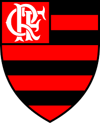
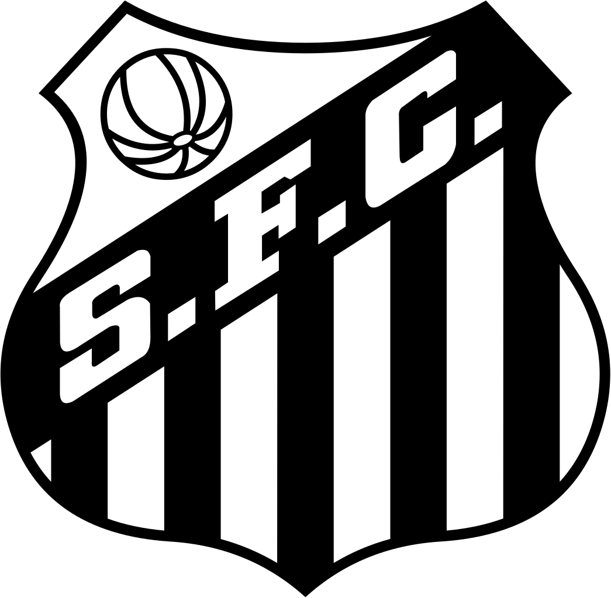
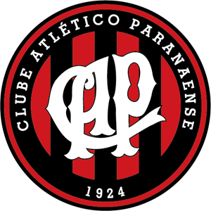
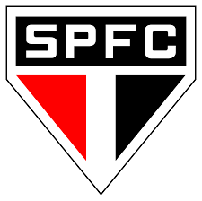

- Flamengo
- Santos
- Palmeiras
- Grêmio
- Athletico Paranaense
- São Paulo
- Internacional
- Corinthians
- Fortaleza
- Goiás
Flamengo
|  | Nome: | Clube de Regatas do Flamengo |
| Fundação: | 15 de novembro de 1895 | |
| Presidente: | Rodolfo Landim | |
| Treinador: | Jorge Jesus | |
| Arena/Estádio: | Maracanã |
Santos
|  | Nome: | Santos Futebol Clube |
| Fundação: | 14 de abril de 1912 | |
| Presidente: | José Carlos Peres | |
| Treinador: | Jesualdo Ferreira | |
| Arena/Estádio: | Vila Belmiro |
Palmeiras
 |
Nome: | Sociedade Esportiva Palmeiras |
| Fundação: | 26 de agosto de 1914 | |
| Presidente: | Maurício Galiotte | |
| Treinador: | Vanderlei Luxemburgo | |
| Arena/Estádio: | Allianz Parque |
Grêmio
 |
Nome: | Grêmio Foot-Ball Porto Alegrense |
| Fundação: | 15 de setembro de 1903 | |
| Presidente: | Romildo Bolzan Junior | |
| Treinador: | Renato Portaluppi | |
| Arena/Estádio: | Arena do Grêmio |
Athletico Paranaense
|  | Nome: | Club Athletico Paranaense |
| Fundação: | 26 de março de 1924 | |
| Presidente: | Mario Celso Petragilia | |
| Treinador: | Dorival Júnior | |
| Arena/Estádio: | Arena da Baixada |
São Paulo
|  | Nome: | São Paulo Futebol Clube |
| Fundação: | 25 de janeiro de 1930 | |
| Presidente: | Carlos Augusto de Barros e Silva | |
| Treinador: | Fernando Diniz | |
| Arena/Estádio: | Morumbi |
Internacional
| Nome: | Internacional Esporte Clube | |
| Fundação: | 2 de junho de 1959 | |
| Presidente: | Ségio Filho | |
| Treinador: | Josenildo (Nildo) | |
| Arena/Estádio: | Módulo Esportivo Euzário Pereira da Silva |
Corinthians
 |
Nome: | Sport Club Corinthians Paulista |
| Fundação: | 1 de setembro de 1910 | |
| Presidente: | Andrés Sanchez | |
| Treinador: | Tiago Nunes | |
| Arena/Estádio: | Arena Corinthians |
Fortaleza
 |
Nome: | Fortaleza Esporte Clube |
| Fundação: | 18 de outubro de 1918 | |
| Presidente: | Marcelo Paz | |
| Treinador: | Rogério Ceni | |
| Arena/Estádio: | Alcides Santos |
Goiás
| Nome: | Goiás Esporte Clube | |
| Fundação: | 6 de abril de 1943 | |
| Presidente: | Marcelo Almeida | |
| Treinador: | Ney Franco | |
| Arena/Estádio: | Hailé Pinheiro |